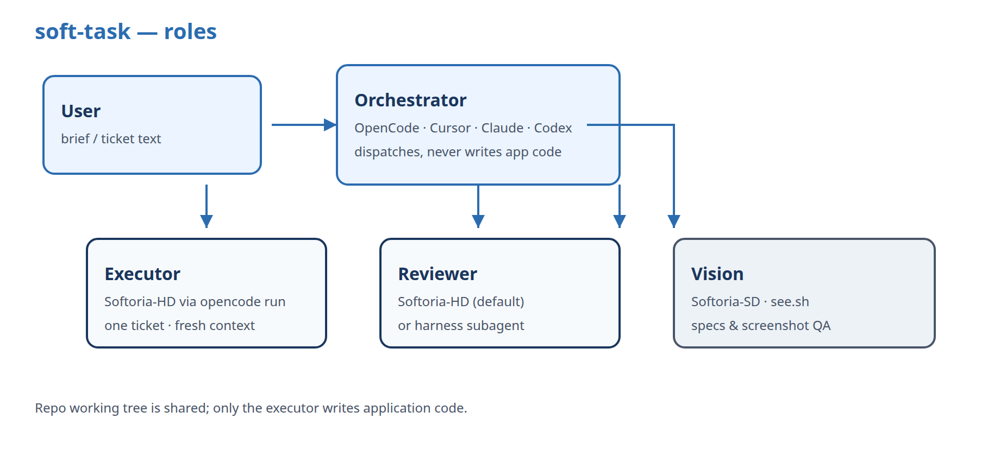
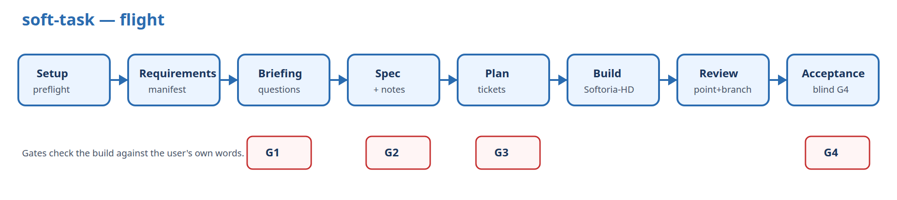

Фреймворк для AI-розробки великих задач
| Тип | Skill для AI-агента + CLI |
|---|---|
| Середовища | Cursor, Claude Code, OpenCode, Codex |
| Виконавець | Softoria-HD |
| Зір (vision) | Softoria-SD |
| Вимоги | Node 18+, OpenCode, Python 3, VPN |
| Основа | Autopilot (nick-vels) |
| Ліцензія | MIT |
| Код | GitHub |
soft-task — це фреймворк для розробки з AI-агентом. Ви даєте задачу текстом або файлом. soft-task ділить задачу на малі частини — тікети. Кожен тікет виконує окремий агент-виконавець (за замовчуванням — Softoria-HD) у новому, чистому контексті.
Головний агент — оркестратор — керує процесом. Це агент у вашому середовищі (Cursor, Claude Code, OpenCode або Codex). Оркестратор не пише код проєкту. Він планує, запускає виконавців і перевіряє результат.
Наприкінці soft-task порівнює результат з вашим початковим текстом задачі. Так жодна вимога не губиться.
Малу задачу агент робить в одному чаті. Велика задача в один контекст не поміщається. Агент забуває частину вимог і робить помилки. Далі більшість часу йде на виправлення.
soft-task вирішує це так:
| Роль | Хто виконує | Що робить |
|---|---|---|
| Оркестратор | Агент у сесії, де ви викликали /soft-task | Планує, запускає виконавців, комітить, перевіряє. Код проєкту не пише. |
| Виконавець | Softoria-HD | Пише код одного тікета. Кожен тікет — новий процес. |
| Рев’юер | Softoria-HD або субагент середовища | Перевіряє код після тікета і всю гілку наприкінці. |
| Приймальник | Softoria-HD або субагент середовища | Наприкінці перевіряє результат тільки за вашим текстом задачі (G4). |
| Допоміжний агент | Softoria-HD або субагент середовища | Не пише код проєкту. Вивчає репо, перевіряє специфікацію (G2), пише ADR і пам’ять проєкту. |
| Зір (vision) | Softoria-SD | Описує макети текстом. Перевіряє скріншоти UI. |

Один повний цикл від задачі до результату — це прогін. Прогін має вісім етапів:
.soft-task/ і відкриває дашборд.manifest.md.
| Перевірка | Коли | Що перевіряє |
|---|---|---|
| G1 | Після брифінгу | Кожна вимога має статус. |
| G2 | Після специфікації | Специфікація покриває всі вимоги. |
| G3 | Після плану | Кожна вимога є в тікеті. Кожен тікет закриває вимогу. |
| G4 | Наприкінці | Результат відповідає тексту задачі. Специфікацію приймальник не бачить. |
Перед встановленням підготуйте:
SOFTORIA_API_KEY.npx github:oleksandr-kupenko/soft-task install --harness all --yes
export SOFTORIA_API_KEY="…"
npx github:oleksandr-kupenko/soft-task doctorПісля встановлення перезапустіть середовище. Тоді з’явиться команда /soft-task.
| Команда / прапорець | Що робить |
|---|---|
install | Встановлює skill і команду /soft-task. |
--harness <name> | Середовище: cursor, claude, opencode, codex або all (за замовчуванням). |
--global | Встановлює для всіх проєктів (за замовчуванням). |
--project | Встановлює тільки в поточний проєкт. |
--yes, -y | Додає провайдер Softoria в ~/.config/opencode/opencode.json без питання. Ключ туди не пишеться — тільки посилання на змінну. |
doctor | Перевіряє OpenCode, ключ, провайдер і робить тестовий запит до Softoria-HD. |
uninstall | Видаляє skill і команду. |
brief.md. Пишіть звичайною мовою: що треба, що не треба, яким має бути результат./soft-task [режим] [глибина] <задача або шлях до файлу>./soft-task Додай експорт інвойсів у CSV
/soft-task task PROJ-123: пагінація інвойсів ламається на 2-й сторінці. Критерії: …
/soft-task interview deep docs/brief.md
/soft-task full strict docs/brief.md| Колір | Значення |
|---|---|
| Синій | soft-task працює сам. |
| Помаранчевий | soft-task чекає вашої відповіді. |
| Зелений | Прогін завершено успішно. |
| Червоний | Прогін зупинено з помилкою. |
Після /soft-task можна вказати два параметри: режим і глибину.
Обидва необов’язкові. Порядок слів не важливий. Решта тексту — це задача.
Режим і глибину можна змінити під час прогону — зміна діє з наступного етапу.
| Режим | Що робить | Коли обрати |
|---|---|---|
semi (за замовчуванням) | Питає тільки там, де задача має розвилку. Решту робить сам. | Більшість задач. |
full | Не питає нічого. На всі питання відповідає сам. | Мало часу. Задача проста й зрозуміла. |
interview | Ставить багато детальних питань про продукт. | Нова фіча з неясними деталями. |
manual | Як interview, плюс просить погодити специфікацію і план. | Потрібен повний технічний контроль. |
| Глибина | Що робить | Коли обрати |
|---|---|---|
| normal (за замовчуванням) | Додає деталі там, де без них результат зламається. | Більшість задач. |
strict | Робить тільки те, що написано. Нових функцій не додає. Помилки й порожні стани все одно обробляє. | Чітке ТЗ без варіантів. |
deep | Перевіряє кожну вимогу: перший запуск, порожній екран, неправильне введення, обрив, права доступу. Витрачає більше часу. | Критична функціональність. |
task | Профіль для тікета в існуючому репо. Мінімум документів, без нової архітектури. | Тікет з Jira або аналогу. |
task.
Після прогону в репозиторії є:
dotnet test, Pest/PHPUnit, npm test, pytest, go test..soft-task/<дата-назва>/: текст задачі, manifest.md, spec.md, interfaces.md, тікети.Налаштування прогону зберігаються у файлі .soft-task/config.json:
{
"engines": {
"executor": "softoria-hd",
"reviewer": "softoria-hd",
"acceptance": "softoria-hd",
"helper": "softoria-hd",
"vision": "softoria-sd"
}
}| Параметр | Значення | Опис |
|---|---|---|
engines.executor | softoria-hd | Хто пише код тікетів. Зараз підтримується тільки Softoria-HD. |
engines.reviewer | softoria-hd | harness | Хто робить рев’ю. |
engines.acceptance | softoria-hd | harness | Хто робить фінальне приймання (G4). |
engines.helper | softoria-hd | harness | Хто виконує допоміжні задачі: вивчення репо, перевірка G2, ADR, пам’ять. |
engines.vision | softoria-sd | Хто працює із зображеннями. |
harness — новий субагент вашого середовища: у Cursor — Task, у Claude Code — Agent, у Codex — ізольований агент.
Оркестратор сам ці ролі не виконує. В OpenCode субагентів немає, тому там усі ролі працюють на Softoria-HD.
Файл можна не редагувати. Скажіть оркестратору на старті, наприклад: «рев’ю і приймання роби субагентом Cursor».
Агент і модель у тій сесії, де ви викликали /soft-task.
Так. На етапі підготовки soft-task запускає локальний сервер і відкриває dashboard.html.
Через OpenCode CLI. Скрипт engines/softoria-hd/run.sh викликає opencode run --standalone. Один тікет — один процес.
Ні. Рев’ю, приймання і допоміжні задачі виконує окремий новий агент: Softoria-HD або субагент середовища. Оркестратор тільки запускає тести тікета і перевіряє, що виконавець не вийшов за свої файли.
Для рев’ю, приймання і допоміжних задач — так: значення harness. Для виконавця — поки ні.
Коли підтримка з’явиться, виконавця запускатиме нативний субагент середовища, а не CLI.
Softoria доступна тільки через OpenCode. CLI працює однаково в усіх середовищах.
Причин дві: вимкнений VPN або збій шлюзу Softoria. Щоб відрізнити одну від іншої, soft-task надсилає до API один короткий запит. Якщо з’єднання немає, проблема у VPN: оркестратор попросить вас його увімкнути. Якщо сервер відповідає помилкою, проблема на боці шлюзу. Тоді виконавець сам повторює запит до трьох разів з паузою 30, 90 і 180 секунд.
Кожен повтор продовжує ту саму сесію, тому зроблена робота не втрачається.
Якщо шлюз не відновився, оркестратор ставить задачі на паузу і запускає фоновий очікувач.
Очікувач раз на хвилину перевіряє Softoria. Коли шлюз відповідає, оркестратор отримує сповіщення і продовжує задачі з місця зупинки.
Перевірити стан вручну: npx soft-task doctor.
soft-task не просить значення ключів. Ключ зберігається тільки у вашому середовищі. Секрети з тексту задачі soft-task видаляє до запису на диск.